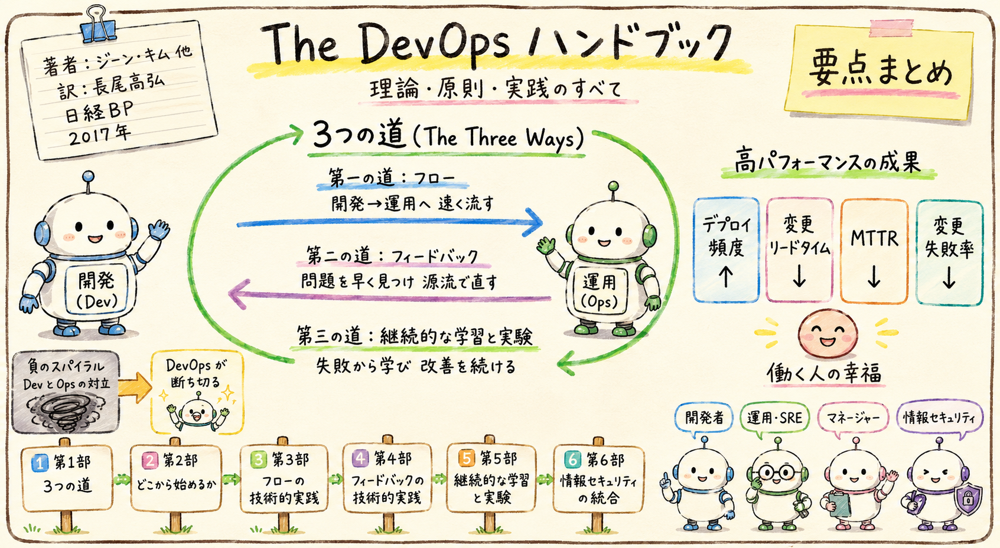

The DevOps ハンドブック 理論・原則・実践のすべて
原題：The DevOps Handbook
- 著者
- ジーン・キム、ジェズ・ハンブル、パトリック・ボア、ジョン・ウィリス
- 訳者
- 長尾高弘
- 出版社
- 日経BP
- 発行年
- 2017年
本書が描く世界
開発（Dev）と運用（Ops）は、しばしば構造的に相反する目標を持たされ、技術的負債と障害が積み上がる「負のスパイラル」に陥る。DevOps は共通の目標と小さなバッチでの仕事の流れによってこの悪循環を断ち切り、短いリードタイム・高いデプロイ頻度・高い安定性・働く人の幸福を同時に実現する。
その実践は The Three Ways（3つの道） という原則に集約される。
フロー
開発→運用への左から右への流れを高速化する。可視化・WIP制限・小さなバッチ。
フィードバック
右から左への速く絶え間ないフィードバック。問題の早期検知と源流での品質作り込み。
継続的な学習と実験
失敗から学ぶ文化と実験の奨励。学習と改善を組織に定着させる。
この本がターゲットとする読者
本書は、DevOps を組織に導入・定着させたい技術リーダーと実務者を主な対象とする。個別ツールの操作知識よりも、原則と全体像を体系的に押さえたい層に向く。（本書の内容から推定）
ソフトウェア開発者
自分が書いたコードの本番運用まで責任を持ち、変更を速く安全に届けたい。
運用・インフラ／SRE
開発と協働し、安定性と変更スピードを両立させたい。
マネージャー／リーダー
組織構造とプロセスを変革し、チームの成果を引き上げたい。
情報セキュリティ／監査
価値の流れを止めずに、統制とコンプライアンスを効かせたい。
おすすめの読み進め方
まず第1部で原則と全体像をつかみ、その後は立場と関心に応じて関連する部へ進むと、必要な実践に最短で到達できる。
DevOps と 3つの道
DevOps が解決する課題、バリューストリームの考え方、そして本書の背骨となる「フロー・フィードバック・継続的な学習と実験」という3つの原則を概観する。
どこから始めるか
変革の最初の一歩。取り組むバリューストリームの選び方、現状の可視化、コンウェイの法則を踏まえた組織設計、運用の日常業務への統合。
第一の道：フローの技術的実践
デプロイパイプラインの基盤、高速で信頼できる自動テスト、継続的インテグレーション、低リスクリリースの自動化とそれを支えるアーキテクチャ。
第二の道：フィードバックの技術的実践
テレメトリの構築と分析、安全なデプロイのためのフィードバック、仮説駆動開発とA/Bテスト、品質を高めるレビューと調整プロセス。
第三の道：継続的な学習と実験の技術的実践
日常業務への学習の組み込み、局所的な発見を全体の改善へ転換する仕組み、そして組織的な学習と改善のための時間の確保。
情報セキュリティ・変更管理・コンプライアンスの統合
セキュリティを全員の日常業務に組み込み、デプロイパイプラインを保護する。コンプライアンスと変更管理を流れを止めずに両立させる。